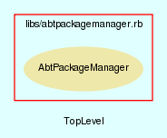

|  |
MainenanceManager.rb
MainenanceManager class handles all downloading of components needed for AbTLinux.
Created by Eric D. Schabell <erics@abtlinux.org> Copyright 2006, GPL.
This file is part of AbTLinux.
AbTLinux is free software; you can redistribute it and/or modify it under the terms of the GNU General Public License as published by the Free Software Foundation; either version 2 of the License, or (at your option) any later version.
AbTLinux is distributed in the hope that it will be useful, but WITHOUT ANY WARRANTY; without even the implied warranty of MERCHANTABILITY or FITNESS FOR A PARTICULAR PURPOSE. See the GNU General Public License for more details.
You should have received a copy of the GNU General Public License along with AbTLinux; if not, write to the Free Software Foundation, Inc., 51 Franklin St, Fifth Floor, Boston, MA 02110-1301 USA
Constructor that sets the type of manager being created.
RETURN MainenanceManager - an initialized MainenanceManager object.
[ show source ]
# File MaintenanceManager.rb, line 42
42: def initialize
43: @managerType = "Mainenance Manager"
44: end
Sets the URI of a central repository for pre-compiled packages.
PARAM String - the URI where the central repository is located. RETURN boolean - True if the URI is set, otherwise false.
[ show source ]
# File MaintenanceManager.rb, line 53
53: def setCentralRepo( uri )
54: end
Sets the location where the package tree is to be downloaded from, can be set to a local location.
PARAM String - the location of the package tree. RETURN boolean - True if the package tree location is set, otherwise false.
[ show source ]
# File MaintenanceManager.rb, line 64
64: def setPackageTreeLocation( location )
65: end